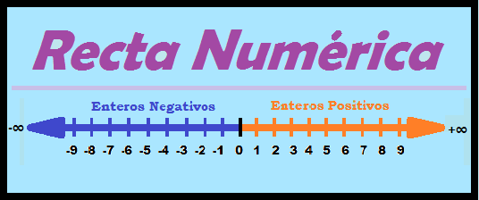
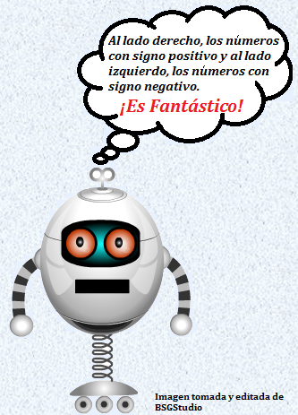

Orden: Los números enteros se pueden ordenar en una recta numérica, de acuerdo a que es siempre mayor el número, que mas este colocado a la derecha y siempre menor el número, que mas este colocado la izquierda, se representan por la letra "Ζ".
Ζ= {...-5,-4,-3,-2,-1,0,1,2,3,4,5...}
- El opuesto de un número entero es aquel que se obtiene simplemente al cambiar su signo.
- Ejemplo: El opuesto de 4 es -4 y el opuesto de 8 es -8.
- El valor absoluto de un número entero, es un valor numérico en el cual no se tiene en cuenta su signo y se indica escribiendo el número entre dos barras.
- Ejemplo: valor absoluto de |-4| = 4 y el valor absoluto|8| = 8
- Todo numero positivo es mayor que uno negativo
- Ejemplo: Uno es mayor que menos uno 1 > -1 y menos cinco es menor que cinco -5 < 5
Representación: Los números enteros se pueden representar mediante una recta numérica.
Ejemplo:
 
Aprendamos jugando
abcdefghijklmnñopqrstuvwxyz0123456789+-
- ¿En una recta numérica,son colocados al lado izquierdo los números?
- bmVnYXRpdm9z
- ¿Valor absoluto de un número es?
- ZGlzdGFuY2lh
- ¿-12569 es opuesto de?
- KzEyNTY5
- ¿Número que no tiene signo positivo y negativo?
- Y2Vybw==
- ¿Valor absoluto de |−563589| = ?
- NTYzNTg5
- ¿No es un número entero un número?
- ZGVjaW1hbA==
- ¿El conjunto de números naturales, es un subconjunto de números?
- ZW50ZXJvcw==
- ¿-863 es un número?
- bmVnYXRpdm8=
Por favor active JavaScript para poder jugar a este juego.